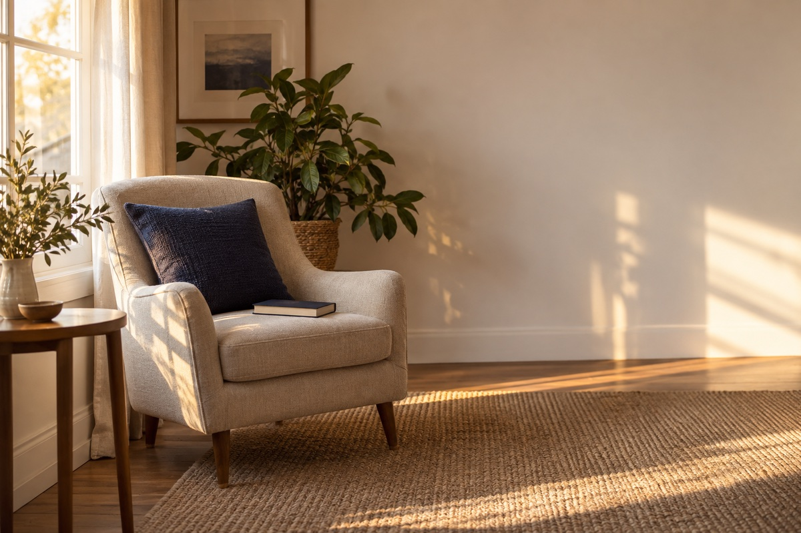
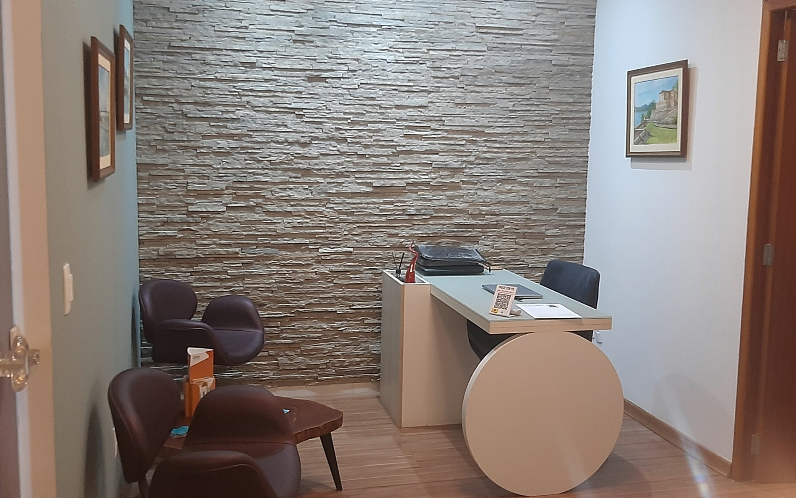

Com o que eu posso te ajudar
Cada pessoa chega com uma história própria. Abaixo estão as dificuldades que mais acompanho em consultório e as formas de atendimento que ofereço.
Dificuldades mais comuns
Ansiedade
A mente não desacelera, a preocupação não passa e o corpo fica em alerta o dia inteiro. Pode vir com coração acelerado, falta de ar, tensão muscular e insônia.
Saiba maisDepressão e tristeza
Os dias ficaram mais difíceis, a motivação sumiu e o que antes fazia sentido perdeu a graça. Cansaço constante, desânimo e vontade de se isolar.
Saiba maisSíndrome do pânico
Crises intensas de medo que aparecem do nada, mesmo sem perigo real. Sensação de perder o controle, tontura, falta de ar, vontade de fugir.
Saiba maisAutoestima
Duvidar da própria capacidade, se cobrar demais, precisar de aprovação o tempo todo e se comparar com os outros.
Saiba maisRelacionamentos
Conflitos que se repetem, ciúmes, dependência emocional, dificuldade de pôr limites ou a sensação de não ser compreendido.
Saiba maisTDAH e concentração
Manter o foco, organizar tarefas e terminar o que começou exige um esforço muito maior do que deveria. Esquecimentos e procrastinação.
Saiba maisEstresse e burnout
Exaustão física e emocional que o fim de semana não resolve, irritação fácil, queda de produtividade e sensação de estar no limite.
Saiba maisAutoconhecimento
Não é preciso estar sofrendo para fazer terapia. Também dá para usar esse espaço para entender melhor emoções, escolhas e objetivos.
Saiba maisServiços
Tudo abaixo é oferecido presencialmente nos Ingleses ou no Santa Mônica, e quase tudo também online.

Psicoterapia adulto
Acompanhamento individual contínuo, no seu ritmo.
Ver página
Psicoterapia de casal
Para a relação que virou conflito, distância ou silêncio.
Ver página
Psicoterapia familiar
Quando o que dói não é de uma pessoa só, mas da convivência.
Ver página
Psicoterapia infantil
Atendimento de crianças, com orientação aos pais.
Ver página
Terapia de grupo
Grupo voltado ao manejo dos transtornos de ansiedade.
Ver páginaPsicoterapia online
Mesmo profissional, por vídeo, de onde você estiver.
Ver páginaAvaliação neuropsicológica
Atenção, memória e aprendizagem, com devolutiva em linguagem comum.
Ver página
Acompanhamento terapêutico
Atendimento em casa ou em instituição, para quem não consegue se deslocar.
Ver páginaQuando você quiser, estou aqui
Você não precisa chegar com tudo explicado. Uma mensagem já é começo.
Sem compromisso · Sigilo garantido
Este canal não atende emergências. Se você está em crise, ligue 188 (CVV, 24 horas) ou 192 (SAMU).